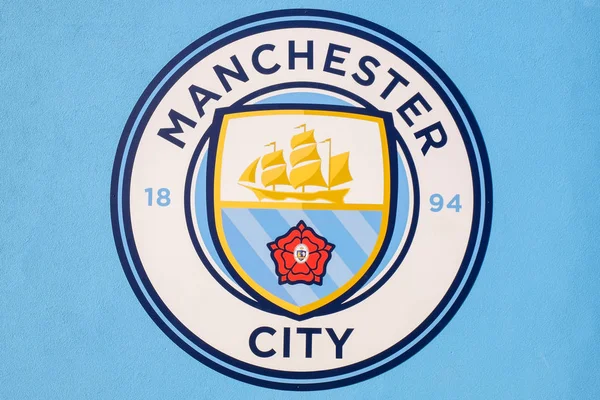

Manchester City enfrenta 115 cargos por violaciones financieras: posibles sanciones podrían cambiar el panorama del fútbol inglés
13/09/2024
El Manchester City enfrenta 115 cargos relacionados con presuntas violaciones de las reglas financieras de la Premier League. Las acusaciones, que abarcan un período de nueve temporadas, han generado una de las investigaciones más importantes en la historia del fútbol inglés.
Contexto de las Acusaciones
La Premier League ha estado investigando al Manchester City desde 2018. Esta investigación fue motivada en parte por publicaciones filtradas de "Football Leaks", que insinuaban que el club había inflado el valor de sus patrocinios para cumplir con el "Fair Play Financiero" (FFP) de la UEFA, entre otros posibles incumplimientos de reglas. Los 115 cargos incluyen la supuesta falta de transparencia en los informes financieros del club, ocultar los verdaderos costos salariales de jugadores y entrenadores, y no cooperar plenamente con la investigación.
Entre las acusaciones más graves están las relacionadas con la ocultación de pagos a entrenadores y jugadores, lo que habría permitido al club evadir ciertos requisitos financieros establecidos por la liga.
Qué Significan los Cargos
Estos cargos cubren infracciones que habrían ocurrido desde 2009 hasta 2018, un período en el que el Manchester City ganó varios títulos, incluyendo la Premier League. La Premier League acusó al Manchester City de:
- No proporcionar información financiera precisa sobre ingresos, en particular con respecto a los patrocinios.
- No revelar adecuadamente los salarios de jugadores y entrenadores.
- Incumplir las regulaciones del Fair Play Financiero.
- No cooperar completamente con la investigación de la Premier League, que comenzó en 2018.
Posibles Sanciones
En caso de que se confirme que el Manchester City es culpable de estas infracciones, las sanciones podrían ser graves. Las posibles sanciones incluyen:
1. Deducto de puntos: Esto podría afectar el rendimiento del equipo en la tabla de la Premier League.
2. Descenso de categoría: En casos extremos, el club podría enfrentarse al descenso a divisiones inferiores.
3. Multas: Podría haber importantes sanciones económicas.
4. Anulación de títulos: Existe la posibilidad de que títulos ganados durante el período en cuestión sean anulados.
El Proceso Judicial
El caso será evaluado por una comisión independiente designada por la Premier League. Este proceso judicial no tiene un plazo fijo para su resolución, lo que significa que podría tardar varios meses, o incluso años, en concluirse. La naturaleza de este juicio es privada, lo que significa que las audiencias no serán públicas y la información se dará a conocer solo cuando haya una decisión final.
El Manchester City ha negado las acusaciones, y en un comunicado oficial ha declarado que están sorprendidos por los cargos y confían en que se resolverá a su favor. El club también ha señalado que ha cooperado plenamente con la investigación y ha proporcionado pruebas en su defensa.
Este caso también es especialmente relevante dado el contexto previo: en 2020, la UEFA impuso una prohibición de dos años al Manchester City para participar en competiciones europeas por presuntas violaciones del Fair Play Financiero. Sin embargo, el Tribunal de Arbitraje Deportivo (TAS) revocó esa prohibición tras una apelación del club.
Consecuencias para el Fútbol Inglés
Este juicio es significativo porque, si las acusaciones resultan ser verdaderas, podría sentar un precedente en la Premier League y en el fútbol en general. Además, plantea cuestiones sobre cómo los clubes de élite manejan sus finanzas y si las reglas actuales son adecuadas para mantener la integridad competitiva.
El desenlace del caso será observado muy de cerca no solo por los seguidores del Manchester City, sino también por otros clubes y entidades involucradas en el fútbol europeo. Las posibles sanciones podrían afectar el panorama futbolístico a largo plazo, tanto en términos de competitividad en la liga como en la percepción pública de los clubes con alto poder adquisitivo.
Por ahora, la situación sigue en desarrollo y se espera que se revelen más detalles en los próximos meses a medida que avance el proceso judicial.